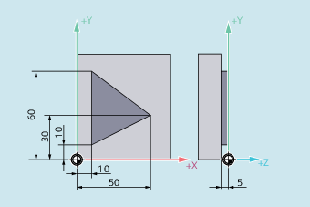

When tool radius compensation (G41/G42) is active, the compensated tool path when traveling around outside corners can be defined using commands of G Group 18 (G450/G451).
| Note |
|
G450/G451 is also used to define the approach path when KONT is active and the approach point behind the contour (see ""). |
G450 [DISC=<value>]
G451
| Activating travel around with transition circle With G450, the tool center point travels around the workpiece outside corner along an arc with the tool radius. | ||||
| Flexible programming of the circular path with G450 (optional) No sharp outside contour corners can occur with G450 as the path of the tool center point through the transition circle is controlled so that the cutting edge stops at the outside corner (programmed position). If sharp outside corners are still to be machined with G450, the DISC instruction in the NC program can be used to program an overshoot. Thus, the transition circle becomes a conic section and the tool cutting edge retracts from the outside corner. | ||||
| Type: | INT | |||
Range of values: | 0, 1, 2, ... 100 | ||||
Meaning: | 0 | Transition circle | |||
100 | Intersection of the equidistants (theoretical value) | ||||
| Activate travel around with intersection point of the equidistants With G451, the tool center point approaches the point of intersection of the two equidistants, which are located at a distance equivalent to the tool radius from the programmed contour. The tool backs off from the workpiece corner. G451 only applies to straight lines and circles. | ||||
| Note |
DISC only applies with call of G450; however, it can be programmed in a previous block without G450. Both commands are modal. |
In the following example, a transition radius is programmed for all outside corners (corresponding to the programming of the corner behavior in block N30). This prevents the tool stopping and backing off at the change of direction.
| Program code | Comment |
|---|---|
| N10 G17 T1 G0 X35 Y0 Z0 F500 | ; Starting conditions. |
| N20 G1 Z-5 | ; Feed in tool. |
| N30 G41 KONT G450 X10 Y10 | ; Activate TRC with KONT approach/retract mode and corner behavior G450. |
| N40 Y60 | ; Mill the contour. |
| N50 X50 Y30 | |
| N60 X10 Y10 | |
| N80 G40 X-20 Y50 | ; Deactivate compensation mode, retraction on transition circle. |
| N90 G0 Y100 | |
| N100 X200 M30 |
See also:
Defining the response when traveling around outside corners (G450, G451, DISC): More information
Activating/deactivating tool radius compensation (G40, G41, G42, OFFN):